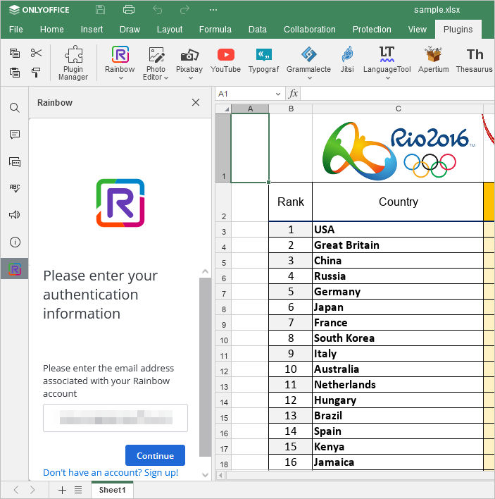
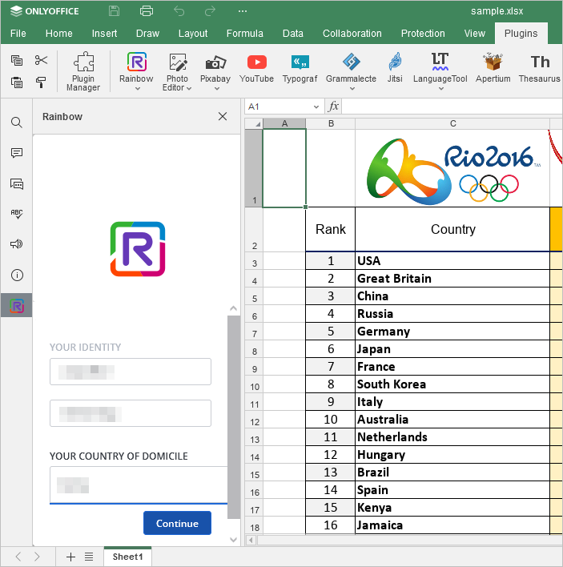
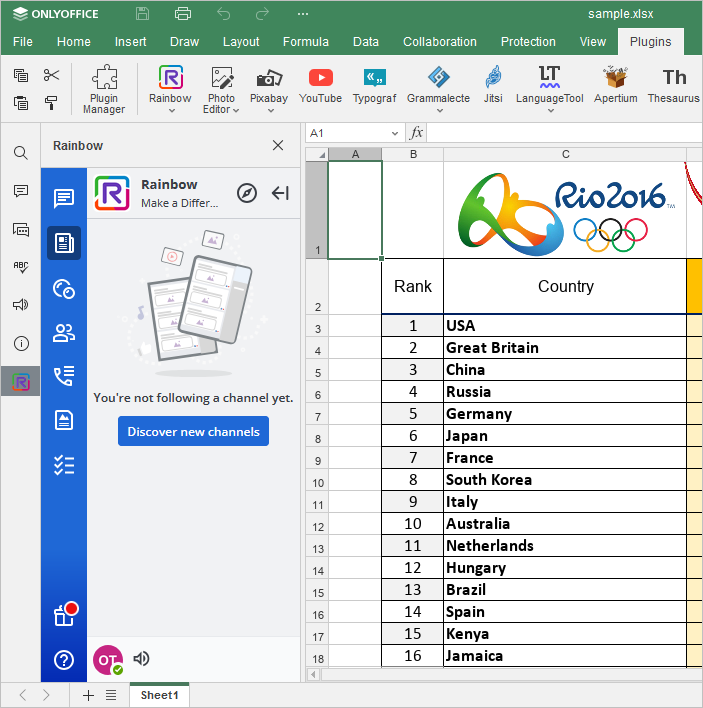

Komunikacija tokom uređivanja
U ONLYOFFICE Spreadsheet Editor-u možete uvek ostati u kontaktu sa kolegama i koristiti popularne onlajn mesindžere, kao što su Telegram i Rainbow.
Telegram i Rainbow dodaci nisu instalirani podrazumevano. Da biste pronašli informacije o tome kako da ih instalirate, pogledajte odgovarajući članak: Dodavanje dodataka u ONLYOFFICE Desktop Editors Dodavanje dodataka u ONLYOFFICE Cloud, ili Dodavanje novih dodataka u serverske editore, ili instalirajte dodatak koristeći Plugin Manager.
Telegram
Da biste započeli ćaskanje u Telegram dodatku,
- Prebacite se na karticu Plugins i kliknite Telegram,
- unesite svoj broj telefona u odgovarajuće polje,
- označite polje Keep me signed in ako želite da sačuvate podatke za prijavu za trenutnu sesiju i kliknite na dugme Next,
-
unesite kod koji ste dobili u Telegram aplikaciji,
ili
- prijavite se pomoću QR koda,
- otvorite Telegram aplikaciju na telefonu,
- idite na Settings > Devices > Scan QR,
- skenirajte sliku da biste se prijavili.
Sada možete koristiti Telegram za trenutno dopisivanje unutar ONLYOFFICE editors interfejsa.
Rainbow
Da biste započeli ćaskanje u Rainbow dodatku,
- Prebacite se na karticu Plugins i kliknite Rainbow,
-
registrujte novi nalog klikom na dugme Sign up, ili se prijavite na već postojeći nalog. Da biste to uradili, unesite svoju email adresu u odgovarajuće polje i kliknite Continue,

- zatim unesite lozinku za nalog,
- označite polje Keep my session alive ako želite da sačuvate podatke za prijavu za trenutnu sesiju i kliknite na dugme Connect,
-
popunite polja u prozoru Your identity.

Sada je sve spremno i možete istovremeno ćaskati u Rainbow dodatku i raditi u ONLYOFFICE editors interfejsu.
